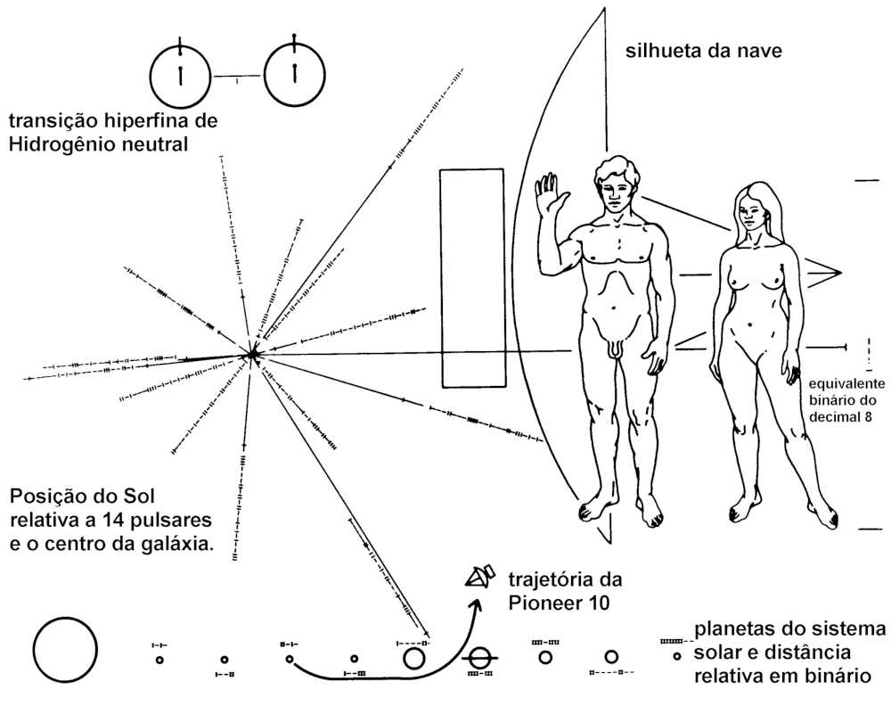

As horas silenciosas aproximam-se...
— William Shakespeare, Ricardo III
A questão de todas as questões para a humanidade, o problema que se acha por trás de todos os outros e é mais interessante do que qualquer um deles é o da determinação do lugar do homem na natureza e sua relação com o cosmo. De onde veio nossa raça, que espécie de limites existem no tocante a nosso poder sobre a natureza e ao poder da natureza sobre nós, em que direção nos encaminhamos — tais são os problemas que se apresentam renovados, sem jamais perder o interesse, a todo ser humano nascido sobre a face da terra.
— T. H. HUXLEY, 1863
E finalmente volto a uma das indagações com as quais iniciei a busca da inteligência extraterrestre. Apesar das insinuações de que o meio de comunicação preferido dos contatos interestelares será telepático, isso me parece, na melhor das hipóteses, uma ideia jocosa. De qualquer forma, não existe a menor prova a seu favor; e eu ainda estou para ver até mesmo um indício moderadamente convincente de transmissão telepática neste planeta. Ainda não somos capazes de voos interestelares importantes, embora alguma outra civilização mais adiantada o possa ser. A despeito de todo o barulho sobre objetos voadores não-identificados e astronautas vindos à Terra no passado, não existe nenhuma prova insofismável de que fomos ou estamos sendo visitados.
Restam, então, as máquinas. A comunicação com a inteligência extraterrestre pode utilizar o espectro eletromagnético e, mais provavelmente, a faixa de rádio do espectro; ou pode utilizar ondas gravitacionais, neutrinos, táquions (se é que existem), ou algum novo aspecto de física que não será descoberto nos próximos três séculos. Contudo, não importa qual o meio, ela exigirá o uso de máquinas e, se nossa experiência em radioastronomia serve como orientação, máquinas acionadas por computadores cujas capacidades se aproximam daquilo que podemos chamar de inteligência. Não se podem examinar com cuidado dados colhidos durante muitos dias em 1 008 frequências diferentes, nos quais a informação pode variar em poucos segundos ou até mais depressa, correndo os olhos sobre os registros. Isso requer técnicas de autocorrelação e grandes computadores eletrônicos. E essa situação, que se aplica a observações que Frank Drake, de Cornell, e eu fizemos recentemente no Observatório de Arecibo, só pode tornar-se mais complexa — ou seja, mais dependente de computadores — com os aparelhos de escuta que provavelmente serão usados em futuro próximo. Podemos projetar programas de recepção e transmissão de imensa complexidade. Se tivermos sorte, empregaremos estratagemas de elevada inteligência da máquina, caso queiramos buscar inteligência extraterrestre.
O número de civilizações adiantadas na galáxia da Via Láctea depende hoje de muitos fatores, variando do número de planetas por estrela até a probabilidade da origem da vida. Mas, uma vez que a vida teve início em um ambiente relativamente benigno, e existem bilhões de anos de tempo evolutivo, as expectativas de muitos de nós é que os seres inteligentes se desenvolvessem. Naturalmente a rota evolutiva seria diferente daquela que observamos na Terra. A sequência exata de acontecimentos que ocorreram aqui — inclusive a extinção dos dinossauros e a recessão das florestas pliocênicas e pleistocênicas — provavelmente não aconteceu da mesma forma em qualquer outro ponto do universo. Entretanto, deve haver muitas vias funcionalmente equivalentes para um resultado final semelhante. Todos os registros evolutivos de nosso planeta, principalmente o registro contido nos moldes internos fósseis, ilustram uma tendência progressiva na direção da inteligência. Não há mistério algum quanto a isto: os organismos inteligentes, de um modo geral, sobrevivem melhor e deixam maior prole do que os estúpidos. Os pormenores certamente dependerão das circunstâncias como, por exemplo, se primates não-humanos dotados de linguagem tiverem sido exterminados pelos homens, enquanto antropoides ligeiramente menos comunicativos foram ignorados por nossos ancestrais. A tendência geral, contudo, parece bastante clara e deve aplicar-se à evolução da vida inteligente em qualquer parte. Quando os seres inteligentes atingem a tecnologia e a capacidade de autodestruição de sua espécie, a vantagem seletiva da inteligência torna-se mais incerta.
E se recebermos uma mensagem? Existe alguma razão para pensarmos que os seres transmissores ― os quais evoluíram no decorrer de bilhões de anos de períodos geológicos em um ambiente inteiramente diferente do nosso — seriam suficientemente semelhantes a nós para que suas mensagens fossem compreendidas? Penso que a resposta deve ser assim: uma civilização capaz de transmitir mensagens por rádio deve pelo menos conhecer o rádio. A frequência, a constante do tempo e a faixa da mensagem são comuns às civilizações transmissoras e receptoras. A situação assemelha-se ligeiramente à dos radioamadores. À exceção de eventuais emergências, sua conversão parece quase exclusivamente limitada aos mecanismos de seus instrumentos: é o aspecto de suas vidas que sabem ter em comum.
Mas eu penso que a situação é muito mais promissora. Sabemos que as leis da natureza, ou pelo menos muitas delas, são as mesmas em toda parte. Podemos detectar, mediante a espectroscopia, os mesmos elementos químicos, as mesmas moléculas comuns em outros planetas, estrelas e galáxias; e o fato de os espectros serem os mesmos demonstra que os mesmos mecanismos através dos quais átomos e moléculas são induzidos a absorver e emitir radiação existem em toda parte. Galáxias distantes podem ser observadas movendo-se pesadamente ao redor umas das outras em perfeita harmonia com as mesmas leis da gravitação que determinam o movimento de um pequeno satélite artificial ao redor de nosso pálido planeta azul chamado Terra. Observamos que a gravidade, a mecânica quântica e a maior parte da física e da química são as mesmas em toda parte.
[Imagem: Estrelas, de M.C. Escher]
Os organismos inteligentes que evoluem em outro mundo podem não ser semelhantes a nós em termos bioquímicos. Eles quase certamente desenvolveram adaptações bastante diferentes ― desde enzimas até sistemas orgânicos — para enfrentar as diferentes circunstâncias de seus diversos mundos. Mas eles devem estar submetidos às mesmas leis da natureza.
As leis dos corpos em queda livre parecem simples para nós. Em aceleração constante, tal como a proporcionada pela gravidade terrestre, a velocidade de um objeto em queda livre aumenta proporcionalmente ao tempo; a distância percorrida aumenta proporcionalmente ao quadrado do tempo. Essas relações são muito elementares. Desde Galileu, pelo menos, elas têm sido entendidas muito bem. Entretanto, podemos imaginar um universo no qual as leis da natureza sejam imensamente mais complexas. Mas não vivemos em tal universo. Por que não? Porque, creio, todos os organismos que percebiam seu universo como muito complexo estão mortos. Aqueles dentre nossos ancestrais arbóreos que tinham dificuldades para computar suas trajetórias, enquanto bracejavam de árvore em árvore, não deixaram prole muito numerosa. A seleção natural* serviu como uma espécie de peneira intelectual, produzindo cérebros e inteligências cada vez mais competentes para manipular as leis da natureza. Essa sintonia, extraída pela seleção natural*, entre nossos cérebros e o universo pode ajudar a explicar um dilema proposto por Einstein: a mais incompreensível propriedade do universo, disse ele, é ser so compreensível.
Se assim é, a mesma seleção evolutiva deve ter ocorrido em outros mundos que produziram seres inteligentes. Inteligências extraterrestres que carecem de ancestrais aviários ou arbóreos podem não compartilhar de nossa paixão pelo voo espacial. Mas todas as atmosferas planetárias são relativamente transparentes nas porções visíveis e invisíveis do espectro — por causa da mecânica quântica dos átomos e moléculas cosmicamente mais abundantes. Os organismos que existem no universo devem, portanto, ser sensíveis à radiação óptica, ou radiativa, ou a ambas. Após o desenvolvimento da física, a ideia da radiação eletromagnética para comunicação interestelar deverá ser um lugar-comum cósmico — uma ideia convergente evoluindo independentemente em incontáveis mundos através da galáxia após a descoberta local da astronomia elementar, aquilo a que podemos chamar os fatos da vida. Se formos suficientemente felizes para estabelecer contato com alguns desses outros seres, creio que descobriremos que grande parte de sua biologia, sociologia e política nos parecerá espantosamente exótica e profundamente misteriosa. Mas suspeito que teremos pouca dificuldade para nos compreendermos quanto aos aspectos mais simples da astronomia, da física, da química e talvez da matemática.
Eu certamente não espero que seus cérebros sejam anatomicamente ou talvez mesmo quimicamente semelhantes aos nossos. Seus cérebros terão tido diferentes histórias evolutivas em ambientes diferentes. Só temos de olhar para os animais terrestres com sistemas orgânicos substancialmente diferentes para ver quanta variação na fisiologia cerebral é possível. Existe, por exemplo, um peixe africano de água doce, Mormyridae, que frequentemente é encontrado em águas lamacentas nas quais a detecção visual de predadores, presas ou parceiros sexuais é difícil. Ele desenvolveu um órgão especial que estabelece um campo elétrico e monitoriza esse campo em relação a qualquer criatura que o atravesse. Esse peixe possui um cerebelo* que recobre toda a parte posterior de seu cérebro como uma camada espessa que lembra o neocórtex* dos mamíferos. Ele tem uma espécie de cérebro espetacularmente diferente e, ainda assim, no sentido biológico mais fundamental, está mais estreitamente relacionado conosco do que qualquer ser extraterrestre inteligente.
Os cérebros dos extraterrestres provavelmente possuirão vários ou muitos componentes lentamente adicionados pela evolução, tal como nós temos. Pode ainda haver uma tensão entre seus componentes, tal como ocorre entre nós, embora a marca registrada de uma civilização bem-sucedida possa ser a capacidade de obter uma paz duradoura entre vários componentes cerebrais. Eles quase certamente terão ampliado sua inteligência extra-somática* de forma significativa, empregando máquinas inteligentes. Mas eu creio ser altamente provável que nossos cérebros e nossas máquinas e seus cérebros e suas máquinas venham a se entender muito bem entre si.
Os benefícios práticos, assim como as perspectivas filosóficas capazes de contribuir para a recepção de uma longa mensagem oriunda de uma civilização avançada, são imensos. Mas a extensão dos benefícios e a rapidez com que poderemos assimilá-los dependem dos pormenores do conteúdo da mensagem, acerca do qual é difícil fazer previsões fidedignas. Uma consequência, entretanto, parece clara: a recepção de uma mensagem vinda de uma civilização adiantada demonstrará que existem civilizações adiantadas, que existem métodos para evitar a autodestruição, a qual parece um período tão real de nossa presente adolescência tecnológica. Assim sendo, a recepção de uma mensagem interestelar proporcionaria um benefício muito prático que em matemática é denominado o teorema da existência — neste caso, a demonstração de que é possível para as sociedades 
[Imagem: A placa a bordo das naves Pioneer 10 e 11, os primeiros veículos da humanidade a se aventurarem no espaço interestelar. As placas de alumínio folheadas a ouro de 15 x 23 centímetros transmitem, naquilo que deseja representar uma linguagem científica facilmente compreensível, algumas informações sobre o local, a época e a natureza dos construtores das espaçonaves. As mensagens de rádio interestelares podem ser muito mais ricas em conteúdo informativo do que essa mensagem, semelhante a uma garrafa lançada no oceano cósmico.]
Ainda que o avanço e não a regressão do conhecimento e da inteligência pareça tão claramente a única saída para as dificuldades atuais e a única abertura a um futuro expressivo para a humanidade (ou, quem sabe, até o único futuro viável), nem sempre esse ponto de vista é adotado na prática. Os governos frequentemente perdem a perspectiva da diferença entre benefícios a curto e a longo prazos. Os benefícios práticos mais importantes têm surgido a partir dos mais improváveis e aparentemente impraticáveis progressos científicos. O rádio hoje não é apenas um meio de comunicação importante nas pesquisas da inteligência extraterrestre, mas o meio pelo qual as emergências obtêm suas respostas, as notícias são transmitidas, os telefonemas retransmitidos e os programas para distração difundidos. Todavia, o rádio surgiu porque um físico escocês, James Clerk Maxwell, inventou um termo, o qual ele denominou corrente de deslocamento, em um conjunto de equações diferenciais parciais hoje conhecidas como equações de Maxwell. Ele propôs a corrente de deslocamento essencialmente porque as equações ficavam esteticamente mais atraentes com ela do que sem ela.
O universo é intrincado e elegante. Desvendamos os segredos da natureza através das vias mais improváveis. As sociedades naturalmente desejarão exercer a prudência na decisão de quais tecnologias — isto é, quais aplicações científicas — devem ser perseguidas e quais não devem. Mas, se não consolidarmos a pesquisa básica, se não apoiarmos a aquisição do conhecimento por seu próprio interesse, nossas opções tornar-se-ão perigosamente limitadas. Somente um físico dentre mil precisa encontrar casualmente algo como a corrente de deslocamento para justificar a todos os outros um soberbo investimento por parte da sociedade. Sem o incentivo vigoroso, a longo prazo e contínuo, da pesquisa científica fundamental, ficamos na posição de comer a própria semente que iria gerar o milho. Podemos escapar da desnutrição por mais um inverno, mas teremos extinguido a última esperança de sobrevivência para o inverno seguinte.
Em uma época semelhante à nossa em certos aspectos, Santo Agostinho de Hippo, após uma juventude saudável e intelectualmente inventiva, retirou-se do mundo da lógica e do intelecto e aconselhou os outros a fazerem o mesmo: “Existe outra forma de tentação, até mais carregada de perigo. É a doença da curiosidade. … É isso que nos guia a tentar desvendar os segredos da natureza, aqueles segredos que escapam à nossa compreensão, que nada nos acrescentam e os quais o homem não deve desejar saber. ... Nessa imensa floresta, cheia de armadilhas e perigos, eu retornei e me afastei desses espinhos. Em meio a todas essas coisas que flutuam incessantemente ao meu redor na vida cotidiana, jamais me admiro de qualquer uma delas e jamais me sinto cativado pelo desejo autêntico de estudá-las. ... Não sonho mais com as estrelas” . A morte de Santo Agostinho, em 430 d.C., marca o início do obscurantismo na Europa.
No último capítulo de A escalada do homem, Bronowski confessou-se entristecido por me ver subitamente cercado, no Ocidente, por um sentimento de terrível perda de vigor, um distanciamento do conhecimento” . Na minha opinião, ele se referia parcialmente à muito limitada compreensão e apreciação da ciência e da tecnologia ― que moldaram nossas vidas e nossas civilizações — nas comunidades públicas e políticas; mas também à crescente popularidade de diversas formas de ciência marginal, popular, ou pseudociência, misticismo e magia.
Observamos hoje no Ocidente (mas não no Oriente) o ressurgimento do interesse por doutrinas vagas, anedóticas e muitas vezes experimentalmente errôneas, que, se verdadeiras, anunciariam pelo menos um universo mais interessante, mas também que, se falsas, implicam um descuido intelectual, uma ausência do espírito de luta e um desvio de energias não muito promissor para nossa sobrevivência. Entre essas doutrinas acham-se a astrologia (a opinião de que as estrelas a centenas de trilhões de quilômetros, que estavam subindo no momento em que eu nascia em um edifício fechado, influenciam profundamente meu destino); o “mistério” do Triângulo das Bermudas (que comporta muitas versões de que um objeto voador não identificado atua nas imediações das ilhas Bermudas e faz desaparecer navios e aviões); os relatos a respeito de discos voadores em geral; a crença em astronautas vindos à Terra no passado; a fotografia de fantasmas; a piramidologia (inclusive a opinião de que minha lâmina de barbear fica mais afiada dentro de uma pirâmide de cartolina do que dentro de um cubo do mesmo material); a cientologia; auras e fotografias Kirlian; a vida emocional e as preferências musicais dos gerânios; a cirurgia psíquica; a terra plana e oca; a profecia moderna; o entortamento de talheres a distância; as projeções astrais; o catastrofismo velikovskiano; a Atlântida e o Mu; o espiritualismo; e a doutrina da criação especial da natureza por Deus ou por deuses, apesar de nossa profunda correlação, tanto do ponto de vista bioquímico quanto da fisiologia cerebral, com os outros animais. Pode ser que haja uma ponta de verdade em algumas dessas doutrinas, mas sua aceitação disseminada demonstra uma falta de rigor intelectual, uma ausência de ceticismo, uma necessidade de substituir as experiências pelos desejos. Essas são, em geral, se é que posso usar a expressão, doutrinas límbicas e do hemisfério direito, rituais oníricos, respostas naturais — a palavra é certamente adequada — e humanas à complexidade do ambiente que nos cerca. Mas elas também constituem doutrinas místicas e ocultas, idealizadas de tal maneira que não estão sujeitas a contestação e são caracteristicamente impermeáveis à discussão racional. Em contraposição, a abertura para um futuro brilhante reside quase com certeza no total funcionamento do neocórtex* — razão aliada à intuição e aos componentes límbicos e do complexo-R*, sem dúvida, mas não obstante razão: uma intrépida labuta através do mundo como ele realmente é.
Foi somente no último dia do Calendário Cósmico que substanciais faculdades intelectuais evoluíram sobre o planeta Terra. O funcionamento coordenado de ambos os hemisférios cerebrais foi o instrumento com que a natureza nos dotou para a sobrevivência. Seria improvável nossa sobrevivência caso não utilizássemos nossa inteligência humana integralmente e de forma criativa.
“Somos uma civilização científica” , declarou Jacob Bronowski. “Isso significa uma civilização na qual o conhecimento e sua integridade são cruciais. Ciência é apenas uma palavra latina que significa conhecimento. ... O conhecimento é nosso destino.”